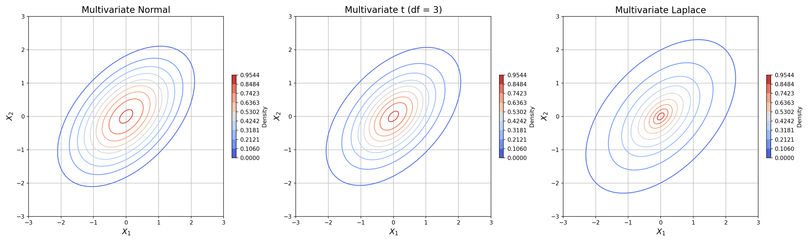

The expected value of a random vector X is given by a vector whose elemnts are given by the expectations of the elements of X:
$$\mathbb{E}[X]=(\mathbb{E}[X_1],\mathbb{E}[X_2],\dots,\mathbb{E}[X_n])$$
Covariance
The Covariance matrix of X is given by a similar equation as the variance for a univariate case:
$$\text{Var}[X]=\mathbb{E}[(X-\mathbb{E}[X])]\mathbb{E}[(X-\mathbb{E}[X])]^T$$
In applied fields, the estimation of the covariance matrix is a difficult and important thing.
Correlation Matrix
This can be interpreted in terms of correlations by normalizing the elements by dividing by \(\sigma_i\sigma_j\). The diagonals of the correlation matrix will be 1; the off-diagonal terms will be between -1 and 1 inclusive.
Cross-Covariance Matrix
The cross-covariance matrix is a generalization of the covariance matrix, where you can have two different vectors:
$$K_{XY}=\mathbb{E}[(X-\mathbb{E}[X])(Y-\mathbb{E}[Y])^T]$$
Multivariate Normal
A random vector \(X=(X_1,X_2,\dots,X_n)\) is said to follow a multivariate normal distribution with mean \(\mu\) and covariance matrix \(\Sigma\) if its joint probability density function is given by:
$$f(\vec{x})=\frac{1}{(2\pi)^{n/2}\sqrt{\text{det}(\Sigma)}}\exp\left(-\frac{1}{2}(x-\mu)^{T}\sigma^{-1}(x-\mu)\right)$$
where \(\vec{x}=(x_1,x_2,\dots,x_n)\), \(\mu\) is the mean vector, and \(\Sigma\) is the covariance matrix.
Covariance Matrix Requirements
For the univariate case, the variance had to be positive. For the multivariate case, \(\Sigma\) must be positive semi-definite.
Positive Semi-Definite
An \(n \times n\) symmetric real matrix M is positive semi-definite if for for all \(\vec{x}\in\mathbb{R}^n\), \(\vec{x}^TM\vec{x}\geq 0\).
Below are some characteristics of positive semi-definite matrices:
All its eigenvalues are non-negative
Example
The joint PDF for a bivariate normal distribution of \(X_1, X_2\) is:
$$f(x_1,x_2)=\frac{1}{2\pi\sigma_1\sigma_2\sqrt{1-\rho^2}}\exp\left(\frac{1}{2(1-\rho^2)}\left[\frac{(x_1-\mu_1)^2}{\sigma_1^2}+\frac{(x_2-\mu_2)^2}{\sigma_2^2}-2\rho\frac{(x_1-\mu_1)(x_2-\mu_2)}{\sigma_1\sigma_2}\right]\right)$$
Multivariate T-Distribution
A random vector \(X=(X_1,X_2,\dots,X_n)\) is said to follow a multivariate T distribution with degrees of freedom \(\nu\), mean \(\mu\) and scale matrix \(\Sigma\) if its joint probability density function is given by:
$$f(\vec{x})=\frac{\Gamma(\frac{\nu+n}{2})}{\Gamma(\frac{\nu}{2})(\nu\pi)^{n/2}\sqrt{\text{det}(\Sigma)}}\exp\left(1+\frac{1}{\nu}(x-\mu)^T\Sigma^{-1}(x-\mu)\right)^{-(\nu+n)/2}$$
where \(\vec{x}=(x_1,x_2,\dots,x_n)\), \(\nu\) is the degrees of freedom, \(\mu\) is the mean vector, and \(\Sigma\) is the scale matrix.
Elliptical Distribution
The multvariate normal and t distributions are part of a family called Elliptical Distributions. If one were to draw contour plots for density, they would see elipsoid lines.
Other members of the family include Laplace and logistic distributions.

Elliptical Distributions